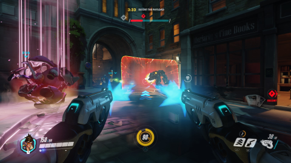
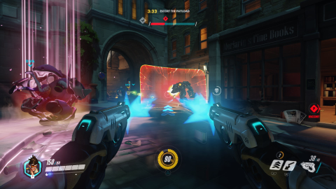

JH Kwon
My name is Junhyung Kwon and I am 25 years old.
MyCourse@ HYU
- CSE3027: 컴퓨터 네트워크
- CSE4009: 시스템 프로그래밍
- CSE3026: 웹어플리케이션
- CSE4007: 인공지능
- CSE1008: 캡스톤 디자인
- CLU1048: 실용트리즈
My Favorite Movies
- The Hobbit: The Battle of the Five Armies (2014) (IMDB)
- Interstellar (2014) (IMDB)
- Gravity (2013) (IMDB)
- Director
- Peter Jackson, Christopher Nolan, Alfonso Cuarón
- Genre
- SF
- Star
- Ian McKellen, Martin Freeman, Richard Armitage
- Matthew McConaughey, Anne Hathaway, Jessica Chastain
- Sandra Bullock, George Clooney, Ed Harris
My Favorite Games
(I have these games.)
DeadSpace2:  OverWatch:  LoL:
OverWatch:  LoL: 
My Favorite Quote
Time waits for no one.
–Rolling Stones
Fun Facts about My Friends
My Colleagues
| First Name | Facts |
|---|
| JungHyun | likes Workout |
| JungHyuk | likes Drinking |
| Chan | likes Studying |
My Favorite Youtube
극딜 초가스